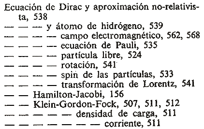

Índices alfabéticos con rayas
Tipografía y notaciones científicas
¡Rápido! En menos de dos segundos, averigüe a qué se refiere la última entrada del siguiente ejemplo (la que termina en «corriente»):

Si se ha dado cuenta de que la entrada no tiene que ver ni con la ecuación de Dirac ni con la densidad de carga, al menos ya ha conseguido algo. Contando con algo de paciencia el número de rayas y de palabras, uno finalmente ve que en realidad es la densidad de corriente en la ecuación de Klein-Gordon-Fock.
Veamos ahora este índice sin toda esa confusión de rayas y organizado visualmente para que las relaciones conceptuales queden a la vista:
ecuación de Dirac
aproximación no relativista, 538
átomo de hidrógeno, 539
campo electromagnético, 562, 568
ecuación de Pauli, 535
espín de las partículas, 533
partícula libre, 524
rotación, 541
transformación de Loretz, 541
ecuación de Hamiton-Jacobi, 156
ecuación de Klein-Gordon-Fock, 507, 511, 512
densidad de carga, 511
densidad de corriente, 511
Las rayas no organizan visualmente, algo importante en los índices alfabéticos. En los artículos de The Indexer dados en los enlaces de la derecha se puede encontrar más información sobre este confuso método para (des)organizar los índices, que todavía se sigue viendo a menudo no solo en España, sino en otros países como Francia o Alemania.
Más…
Enlaces
- German indexing: some observations on typographical practice (artículo en The Indexer de Jochen Fassbender, que en parte se aplica al español)
- Foreign concepts: indexing and indexes on the Continent (artículo en The Indexer de Michael Robertson sobre prácticas que aún sobreviven en la Europa continental)
- Guidelines for indexes and related information retrieval devices (información detallada de la National Information Standards Organization, de EEUU)
- Guidelines for alphabetical arrangement of letters and sorting of numerals an other symbols (complemento del anterior)